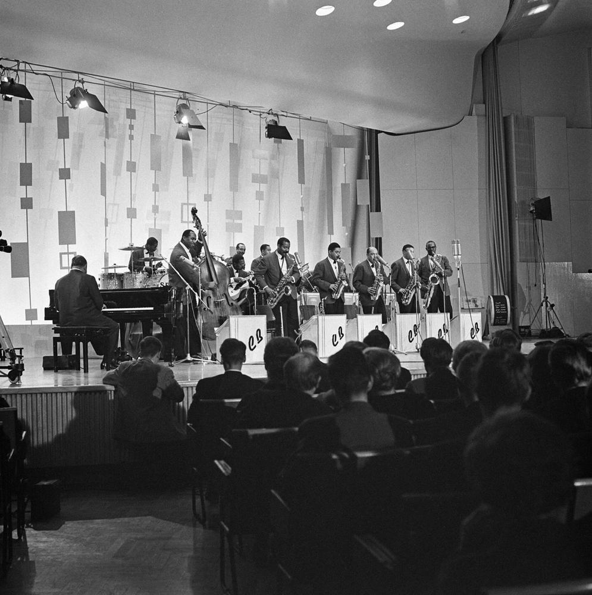
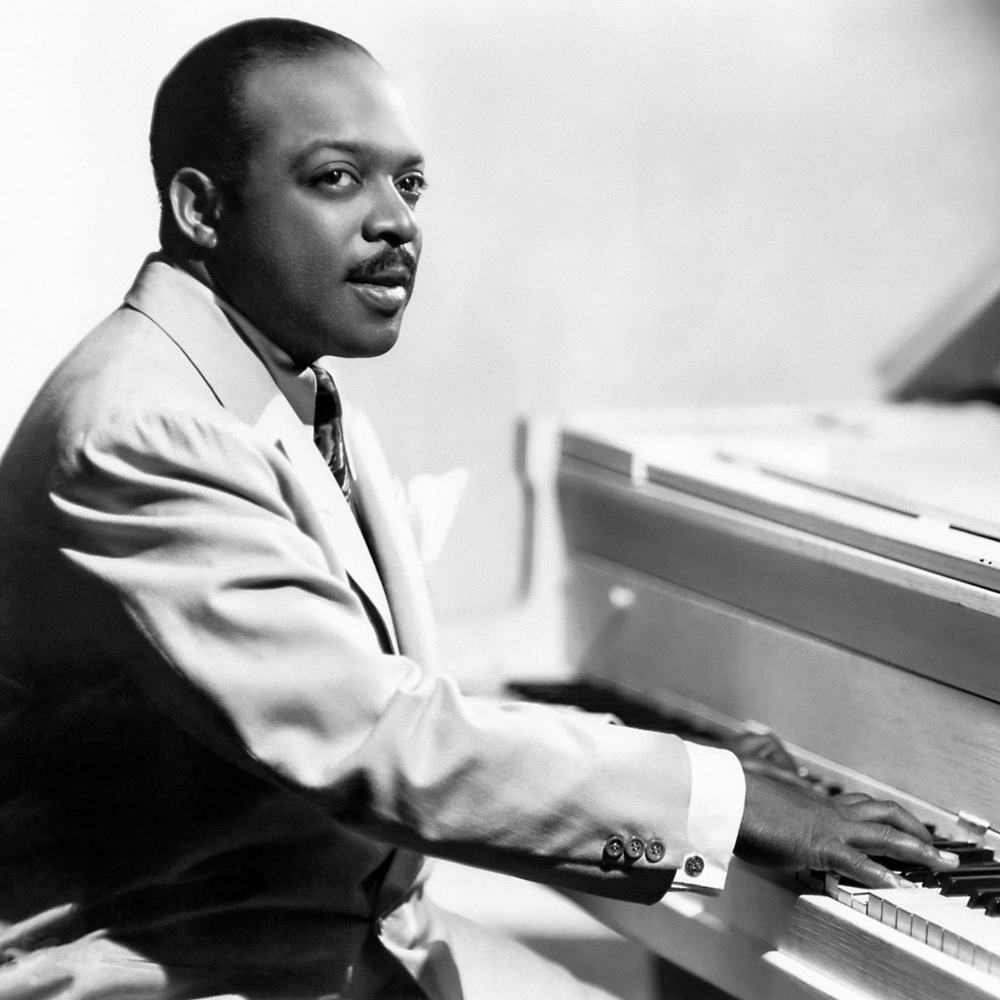

故事
大樂團團長彈鋼琴，常常只彈一兩個音。他是 Count Basie，三十年代從堪薩斯城紅起來。年輕時他也彈得很滿，學的是哈林區華麗的跨步鋼琴。
進了大樂團，他把音越彈越少。十幾支管樂齊奏完，他只在空檔裡點兩三個音。他的節奏組被稱為全美最好，鼓、貝斯、吉他、鋼琴像一個人在呼吸。

他最有名的曲子，叫 One O'Clock Jump。據說原本的曲名不適合在電台念，播報員看了時鐘，就替它改了名字。下次聽大樂團，注意那幾聲輕輕的鋼琴。
故事後面
Count Basie 年輕時學的是哈林區華麗的跨步鋼琴，進了大樂團後，卻把音越彈越少。
他的節奏組被稱為全美最好，鼓、貝斯、吉他、鋼琴像一個人在呼吸，管樂在上面放心地搖擺。
One O'Clock Jump 據說原本的曲名不適合在電台念，播報員看了時鐘，就替它改了名字。

這樣聽
聽鋼琴開頭那幾個音，和後面管樂一層一層疊上來。
逐句英文
The big-band leader often played just one or two notes on piano.
He was Count Basie, who rose to fame from Kansas City in the 1930s.
As a young man he played busy, flashy Harlem stride piano.
Leading a big band, he played fewer and fewer notes.
After the horns roared, he dropped two or three notes into the gaps.
His rhythm section was called the All-American, breathing as one.
His most famous tune is One O'Clock Jump.
Reportedly the original title was unfit for radio, so an announcer glanced at the clock and renamed it.
Next time you hear a big band, listen for those few light piano notes.
查證筆記與出處
Gemini 稿原曲名寫「藍色惡魔」是錯的，已改成不提原名。改名經過為條目軼事，寫據說。
https://en.wikipedia.org/wiki/Count_Basie
https://en.wikipedia.org/wiki/One_O%27Clock_Jump
一分鐘影片版在 Instagram @jazz101tw。